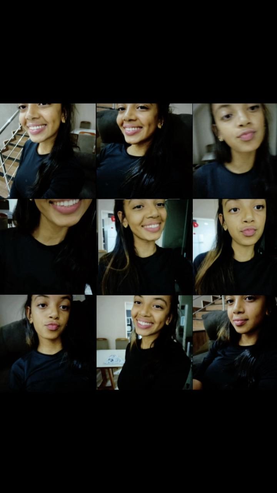
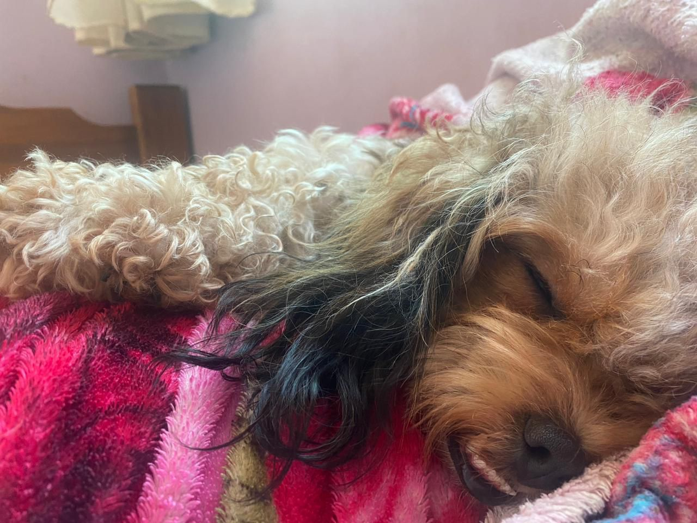
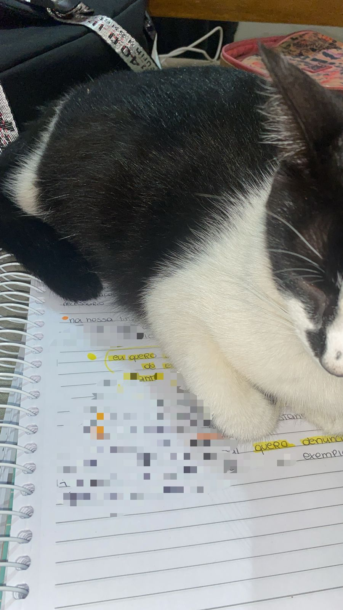
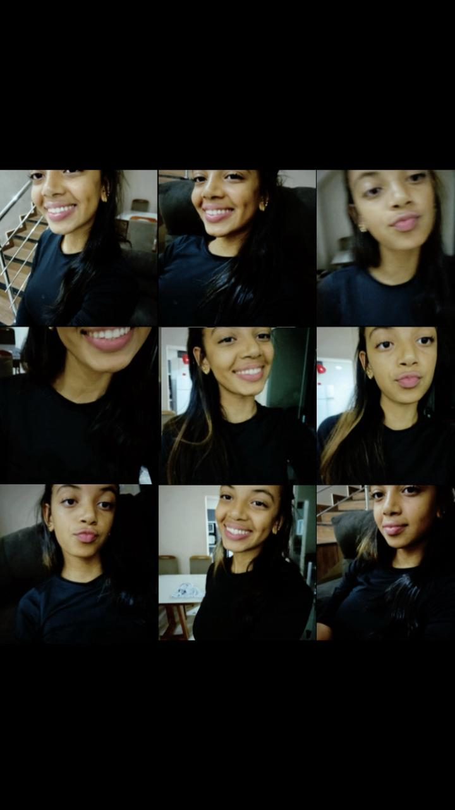
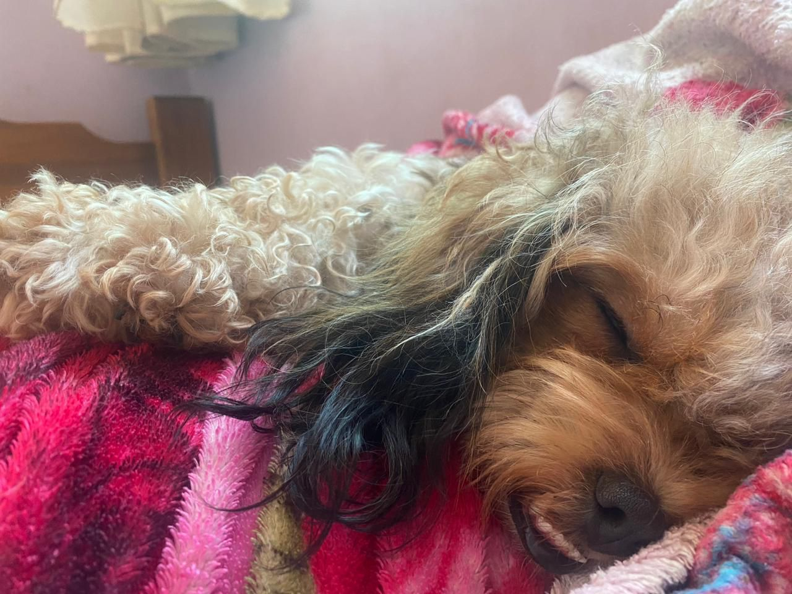
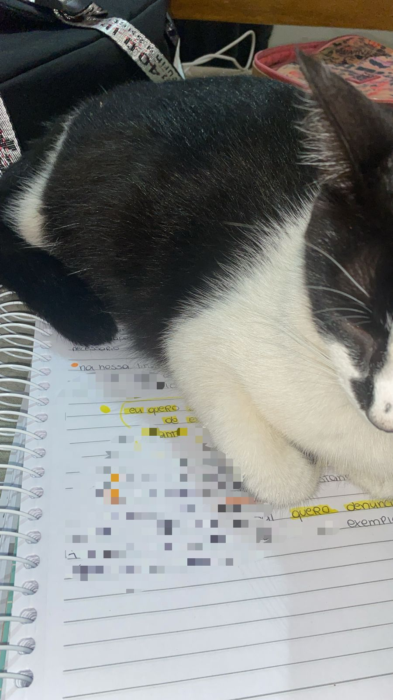

Pfvr, não me abandona não tá :/
Você é tudo o que eu tenho. É tudo o que eu preciso na minha vida...
Eu não sei qual vai ser sua reação ao ler isso,
Mas… vamos lá.
Você sabe que eu te amo muito, né?
Sempre amei e sempre vou amar.
Você é a garota mais incrível, maravilhosa,
Bela, elegante, fofa, atenciosa, perfeita…
que eu já conheci.
Você pode até não acreditar, mas é a verdade.
Se tem uma coisa que eu nunca mentiria,
Seria sobre isso:
O que eu sinto por você.
Desde que te conheci, tudo se tornou maravilhoso pra mim.
Tudo ficou mais leve, mais belo.
Você foi a melhor coisa que já aconteceu na minha vida.
Toda vez que estou com você,
Parece um sonho…
Quando estou com você, nada mais importa.
É como se eu estivesse em casa.
Você é o meu lar.
É como se aquele momento contigo fosse único,
Como se fosse o último dia da minha vida.
Pra você pode parecer só mais um dia,
Mas pra mim é especial.
Por você eu vivo.
Por você eu vivo cada dia.
Quando estou ao seu lado, tudo para.
E ao mesmo tempo, tudo acelera.
Porque com você, o tempo voa.
Cada instante vira eternidade.
Tenho certeza de que a teoria da relatividade existe:
Porque eu poderia passar mil anos com você,
E ainda assim, sentir que foram apenas alguns minutinhos.
Então… isso aqui eu escrevi pra você.
O que eu quero dizer é:
Não importa o que aconteça, eu sempre vou amar você.
Eu quero estar com você em cada momento.
Mesmo que você não sinta o mesmo,
Só de estar ao seu lado, eu já sou feliz.
Eu quero estar com você pra sempre.
E vou estar.
Isso não é uma promessa.
É vontade verdadeira.
Promessas a gente faz por obrigação.
Mas eu não quero que as coisas entre nós sejam assim.
Quero que tudo aconteça no tempo certo.
Sem pressa, sem pressão.
E se for pra esperar…
Eu espero.
Porque com você… tudo vale a pena.
Nem que seja em outra vida,
Eu espero por você.
Eu te amo, Miguinha ❤️✨
Sempre vou te amar.
Amo cada detalhe seu 🤍
Sei que sou simples com as palavras,
Mas pra você…
Eu falaria o mundo inteiro e ainda seria pouco.
Você é o motivo do meu sorriso mais sincero.
Você me traz paz.
Posso ter um dia péssimo,
Mas quando vejo seu rostinho lindo… tudo melhora.
Seu sorriso ilumina o meu dia.
Seus olhos me encantam.
Com você, até os dias ruins se tornam incríveis.
Só de pensar em você, tudo melhora.
Amo seu jeitinho.
Amo cada detalhe seu.
Eu poderia dizer de mil formas o quanto você é incrível…
E ainda não seria o suficiente.
Você é especial.
Você é importante.
Eu amo você.
Um dia, eu ainda vou olhar nos seus olhos
E dizer tudo isso.
Você vai ver como eu te vejo.
Como eu sou completamente apaixonado por cada pedacinho seu.
Eu amo seus sorrisos,
Amo seus olhos,
Amo sua voz,
Amo seu cabelo,
Amo suas mãos,
Amo seus pés,
Amo seu corpo,
Amo sua maluquice,
Amo te fazer sorrir,
Amo sua companhia,
Amo o seu jeito,
Amo tudo em você,
Eu amo você, ❤️✨
Eu te amo. 💖
Pra sempre. :)
Oq eu tenho a dizer: Oi, miguinha...
Eu sei que sempre digo que te amo — e talvez você já esteja até enjoada de ouvir isso tantas vezes — mas é que o que eu sinto por você é tão forte, tão sincero, que eu não consigo guardar só pra mim.
Sabe, eu fico pensando como seria mágico estar perto de você. Toda vez que vejo uma foto ou um vídeo do seu sorriso, eu fico bobo... começo a rir sozinho, acredita? Kkkk
Esses dias eu sonhei com você. Foi algo tão simples, mas que me marcou. A gente estava num lugar que parecia um cinema (eu digo “parecia”, porque nunca fui em um). Eu olhei pro lado... e você estava lá. Com sua mãe. Você olhou pra mim, e não disse nada — mas o seu olhar foi tão intenso, tão doce. Aquele sonho me deixou feliz por dias. Foi como se eu tivesse realmente estado com você.
Quero te dizer que você é maravilhosa. Que é especial de um jeito único. Se eu achasse uma lâmpada mágica, meus três pedidos seriam:
Estar com você pra sempre;
Que todos os seus sonhos se realizem;
Que você nunca me abandone.
Amo cada pedacinho de você:
Seus olhos,
Seu sorriso,
Sua risada,
Seu corpo,
Suas unhas,
Seu cabelo,
Seus pés,
Seu nariz,
Sua boca,
Sua voz,
Até o som da sua respiração...
Amo cada detalhe seu.
Obrigado por existir. Obrigado por ser tão perfeita aos meus olhos.
Eu te amo, miguinha. E te amarei sempre. 💖
Oq eu tenho a dizer hoje: Oi, miguinha.
Não consegui dormir e estava assistindo algo, mas parei por um instante para pensar em você. Abri o grupo onde tenho suas fotos e, sem perceber, me perdi no seu sorriso.
Por sorte, escutei um áudio seu e me reencontrei. Foi como lembrar de tudo o que você representa pra mim, do quanto você é especial e do quanto eu te amo.
Às vezes fico olhando aquele grupo, admirando você, seu rosto… e me dou conta do quanto você é linda e importante pra mim. Isso me faz perceber, mais uma vez, o quanto eu quero estar sempre ao seu lado.
Hoje mesmo, quando você me ligou, eu fiquei tão feliz…
Talvez você já saiba, mas eu sou imensamente grato por ter você na minha vida.
Não sei se te disse isso hoje, mas: eu te amo muito.
Obrigado por ser tão especial.
Obrigado por existir.
Obrigado por ser exatamente quem você é.
Agora mesmo, o que eu mais queria era te abraçar bem forte e dizer, olho no olho, o quanto eu te amo — e o quanto esse momento seria único pra mim.
Obrigado por tudo, miguinha.
Eu te amo demais.
Textinho novi :) Boa noite, minha princesinha. Estou te enviando esta mensagem porque hoje é um dia muito especial. Calma, eu sei que não é seu aniversário, nem estamos comemorando mais um mês de amizade, mas a verdade é que todos os dias ao seu lado são especiais, meu anjo.
Quero apenas te lembrar o quanto gosto de estar perto de você e o quanto você é importante para mim. Obrigado por estar comigo em mais um dia, por me ligar e me dar a oportunidade de ouvir sua voz, sua risada… e de ver esse sorriso lindo que só você tem.
Obrigado por ser essa menina incrível, doce e única. Obrigado por me permitir estar ao seu lado até à noite. Sabe, quando você adormece ouvindo minha voz, eu me sinto em paz… sinto que, de alguma forma, minha voz te acalma, e isso significa muito para mim.
Obrigado por tudo, meu anjo. Eu te amo, minha amiga. Te amo muito.


 




